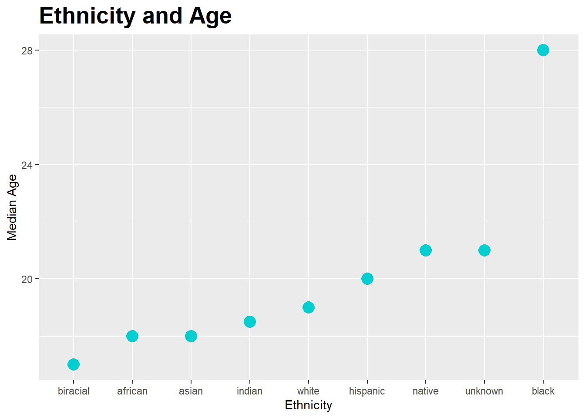
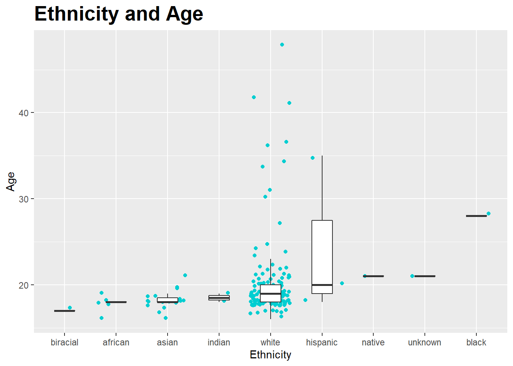
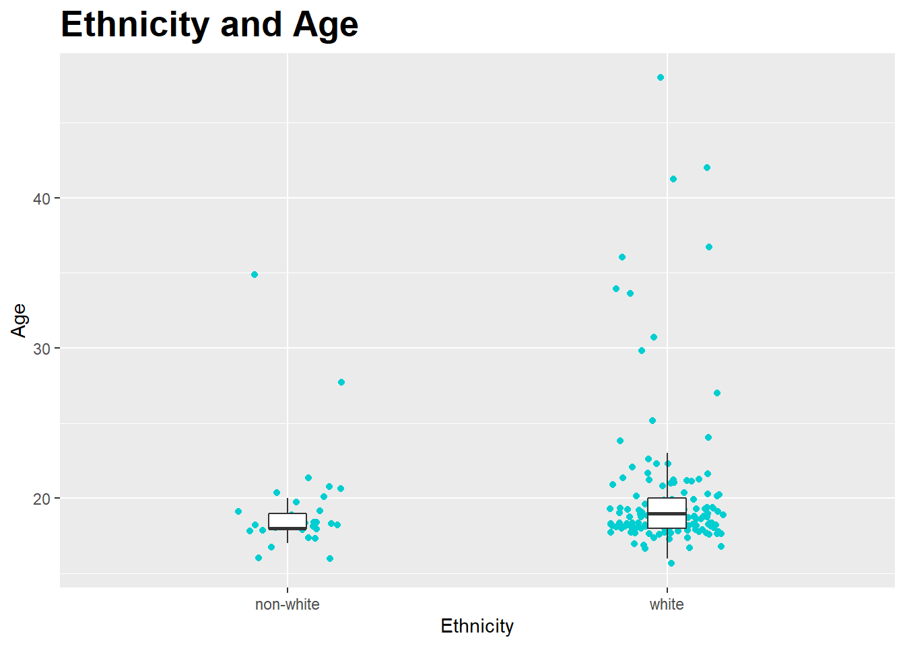

show code
library(tidyverse)
library(here)
#library(naniar)library(tidyverse)
library(here)
#library(naniar)hip <- read_csv(
here::here("supporting_artifacts",
"Labs",
"Lab 3",
"hiphop.csv"))hop <- tibble(hip)
#colnames(hop)
#hop_move <- hop |>
#select(asianMove : whiteMove) |>
#floor()
#hop_new <- hop |>
#select(-asianMove:-whiteMove)
#biggie <- merge(hop_new, hop_move)
#Didn't work, the merge function was a huge memory hog and used up all 32gb of my RAM. # hop$asianMove <- hop$asianMove |>
# floor()
# hop$blackMove <- hop$blackMove |>
# floor()
# hop$hispanicMove <- hop$hispanicMove |>
# floor()
# hop$nativeMove <- hop$nativeMove |>
# floor()
# hop$SAAMEMove <- hop$SAAMEMove |>
# floor()
# hop$whiteMove <- hop$whiteMove |>
# floor()
#revised code:
hop <- hop |>
mutate(
across(asianMove:whiteMove, ~floor(.)))# hop |>
# replace_with_na((
# replace = list(
# city = 0,
# county = 0)))count <- unique(hop$word)
#revised code:
count2 <- hop |>
distinct(word) |>
select(word)hop <- hop |>
mutate(
ethnic_dicot =
ifelse(ethnic != "white",
"non-white", "white"))hop_demo <- hop |>
distinct(
subj, sex,
.keep_all = TRUE) |>
select(
subj,
sex,
ethnic,
ethnic_dicot,
age)
# hop_demo$sex <- as.factor(
# hop_demo$sex)
#
# hop_demo$ethnic <- as.factor(
# hop_demo$ethnic)
#
# hop_demo$ethnic_dicot <- as.factor(
# hop_demo$ethnic_dicot)
#revised code:
hop_demo <- hop_demo |>
mutate(
across(c("sex", "ethnic", "ethnic_dicot"), ~as.factor(.)))
summary(hop_demo) subj sex ethnic ethnic_dicot age
Length:168 Female:117 white :135 non-white: 33 Min. :16.00
Class :character Male : 51 asian : 19 white :135 1st Qu.:18.00
Mode :character african : 5 Median :19.00
hispanic: 3 Mean :20.02
indian : 2 3rd Qu.:20.00
biracial: 1 Max. :48.00
(Other) : 3 demo_ethnic_age <- hop_demo |>
group_by(ethnic) |>
summarize(
median_age = median(age))
demo_ethnic_age %>%
ggplot(mapping = aes(
x = fct_reorder(
ethnic, median_age),
y = median_age,
size = 5)) +
theme(legend.position = "none") +
labs(x = "Ethnicity") +
labs(y = "Median Age") +
ggtitle("Ethnicity and Age") +
theme(
plot.title=element_text(
family='',
face='bold',
colour='black',
size=20),
plot.title.position = "panel") +
geom_point(color = "darkturquoise")
hop_demo %>%
ggplot(mapping = aes(
x = fct_reorder(
ethnic, age),
y = age)) +
theme(legend.position = "none") +
labs(x = "Ethnicity") +
labs(y = "Age") +
ggtitle("Ethnicity and Age") +
theme(
plot.title=element_text(
family='',
face='bold',
colour='black',
size=20),
plot.title.position = "panel") +
geom_jitter(color = "darkturquoise") +
geom_boxplot(
outlier.shape = NA,
width = 0.4)
hop_demo %>%
ggplot(mapping = aes(
x = ethnic_dicot,
y = age)) +
theme(legend.position = "none") +
labs(x = "Ethnicity") +
labs(y = "Age") +
ggtitle("Ethnicity and Age") +
theme(
plot.title=element_text(
family='',
face='bold',
colour='black',
size=20),
plot.title.position = "panel") +
geom_jitter(
color = "darkturquoise",
width = 0.15) +
geom_boxplot(
outlier.shape = NA,
width = 0.1)
YB <- hop |>
filter(age<20) |>
distinct(subj)
hop |>
filter(age<20) |>
select(word, familiarity) |>
group_by(word) |>
summarize(fam = median(familiarity)) |>
slice_max(order_by = fam)
hop |>
filter(age<20) |>
select(word, familiarity) |>
group_by(word) |>
summarize(fam = median(familiarity)) |>
slice_min(order_by = fam)# # NWW <- hop |>
# filter(ethnic_dicot == 'non-white') |>
# filter(sex == 'Female')
# unique(NWW$subj)
#
# hop |>
# filter(ethnic_dicot == 'non-white') |>
# filter(sex == 'Female') |>
# select(word, familiarity) |>
# group_by(word) |>
# summarize(fam = median(familiarity)) |>
# slice_max(order_by = fam)
#
# hop |>
# filter(ethnic_dicot == 'non-white') |>
# filter(sex == 'Female') |>
# select(word, familiarity) |>
# group_by(word) |>
# summarize(fam = median(familiarity)) |>
# slice_min(order_by = fam)
#Revised code:
NWW <- hop |>
filter(ethnic_dicot == 'non-white',
sex == 'Female') |>
distinct(subj)
hop |>
filter(ethnic_dicot == 'non-white',
sex == 'Female') |>
select(word, familiarity) |>
group_by(word) |>
summarize(
fam = median(familiarity)) |>
slice_max(order_by = fam)
hop |>
filter(ethnic_dicot == 'non-white',
sex == 'Female') |>
select(word, familiarity) |>
group_by(word) |>
summarize(fam = median(familiarity)) |>
slice_min(order_by = fam)# W.M.30 <- hop |>
# filter(ethnic_dicot == 'white') |>
# filter(sex == 'Male') |>
# filter(age > 30)
# unique(W.M.30$subj)
#
# hop |>
# filter(ethnic_dicot == 'white') |>
# filter(sex == 'Male') |>
# filter(age > 30) |>
# select(word, familiarity) |>
# group_by(word) |>
# summarize(fam = median(familiarity)) |>
# slice_max(order_by = fam)
#Revised code:
W.M.30 <- hop |>
filter(ethnic_dicot == 'white',
sex == 'Male',
age > 30) |>
distinct(subj)
hop |>
filter(ethnic_dicot == 'white',
sex == 'Male',
age > 30) |>
select(word, familiarity) |>
group_by(word) |>
summarize(fam = median(familiarity)) |>
slice_max(order_by = fam)# hop |>
# filter(ethnic_dicot == 'white') |>
# filter(sex == 'Male') |>
# filter(age >= 17) |>
# filter(age <= 23) |>
# filter(city >= 10000) |>
# filter(city <= 60000) |>
# filter(bieber == 5)
#Revised code:
hop |>
filter(ethnic_dicot == 'white',
sex == 'Male',
age >= 17,
age <= 23,
city >= 10000,
city <= 60000) |>
slice_max(bieber) |>
distinct(subj)